La programación constituye una parte importante del aprendizaje en el siglo XXI, por lo que es también un
componente esencial de todos los proyectos de WeDo 2.0.
Da vida a los modelos que crean los estudiantes y les enseña a estos el pensamiento computacional.
Cuando los estudiantes quieran dar vida a sus modelos, tendrán que arrastrar y soltar los bloques en el panel
de programación.
De este modo, los estudiantes crearán las cadenas del programa. Podrán crear varias cadenas de programa en el
panel, si bien cada una de ellas deberán iniciarse con un bloque de inicio.
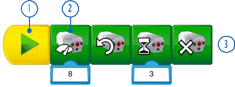
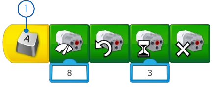
El bloque Iniciar es imprescindible para ejecutar una cadena de programa en WeDo 2.0. “Ejecutar” significa iniciar una serie de acciones hasta su finalización.
Los bloques de programación se emplean en el software WeDo 2.0 para construir una cadena de programa. En lugar de código basado en texto se usan estos bloques con símbolos.
Una cadena de programa es una secuencia de bloques de programación. El último bloque del programa marca el final de este.
Cuando los estudiantes exploran la programación por primera vez, probablemente alineen el mayor número de
bloques posible en el panel de programación.
Para llevar a cabo una idea que tengan en mente, deberán colocar sus bloques en orden de manera que se
ejecuten uno tras otro o de forma simultánea.
Una secuencia es lineal cuando los bloques se colocan uno tras otro de manera lineal. El software LEGO® Education WeDo 2.0 ejecutará una acción tras otra en el orden en el que se han colocado los bloques.
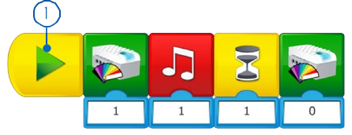
Una secuencia paralela debe utilizarse cuando los estudiantes quieran realizar dos o más acciones al mismo
tiempo.
En este caso, las acciones deben colocarse en cadenas de programa diferentes y ejecutarse a la vez, empleando
diferentes técnicas disponibles en WeDo 2.0.
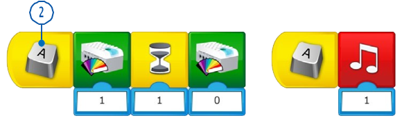
En el desarrollo de cadenas de programa como parte de sus soluciones, los estudiantes organizarán una serie de acciones y estructuras que darán vida a sus modelos.
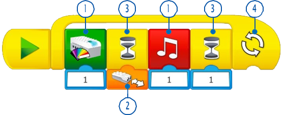
Una salida es algo que puede controlarse mediante un programa escrito por los estudiantes.
Algunos ejemplos de salidas para WeDo 2.0 son la activación y la desactivación de sonidos, luces, pantalla y
motores rotatorios.
Una entrada es una información recibida por un ordenador o un dispositivo. Puede introducirse mediante el
uso de sensores en forma de valor numérico o textual.
Por ejemplo, un sensor que detecta o mide algo (como la
distancia) convierta este valor en una señal de entrada digital para que pueda usarse en un programa.
Los estudiantes pueden indicar a su programa que espere a que ocurra algo antes de continuar la secuencia de
acciones.
Los programas pueden esperar un periodo de tiempo concreto o esperar a que el sensor detecte algo.
Los estudiantes pueden programar acciones que se repitan para siempre o durante un periodo de tiempo específico.
Las funciones son un grupo de acciones que deben usarse conjuntamente en situaciones específicas.
Por ejemplo, el grupo de ladrillos que podría utilizarse para crear un parpadeo de luz se llamaría “la función
parpadear”.
Los estudiantes usan las condiciones para programar acciones que solo deben ejecutarse en determinadas
circunstancias.
Crear condiciones en un programa implica que alguna parte de este no se ejecutará jamás, a menos que se cumplan
las condiciones.
Por ejemplo, si el sensor de inclinación se inclina hacia la izquierda, el motor arrancará; si el sensor se
inclina hacia la derecha, el motor se detendrá. Si el sensor de inclinación no se inclina nunca hacia la
izquierda, el motor nunca arrancará, y si nunca se inclina hacia la derecha, el motor nunca se detendrá.
Un engranaje es una rueda dentada que gira y que hace que otra pieza se mueva.
Las ruedas de engranaje se encuentran, por ejemplo, en una bicicleta, conectadas por medio de una cadena.
Un “tren de engranajes” es cuando los engranajes se disponen directamente uno junto a otro.
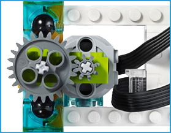
Tren de subida:
Un engranaje grande acciona un engranaje pequeño para generar un número mayor de giros.
Tren de bajada:
Un engranaje pequeño acciona un engranaje grande para generar un número menor de giros.
Un engranaje cónico es un engranaje en ángulo que se puede colocar de manera perpendicular con otro engranaje, lo que cambiaría el eje de rotación.
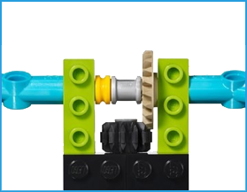
Un bastidor es un elemento plano con dientes que se conecta a un engranaje circular, lo que se conoce
habitualmente como un piñón.
Este par de engranajes cambian el movimiento de rotación habitual, ya que el engranaje gira en movimiento
lineal.
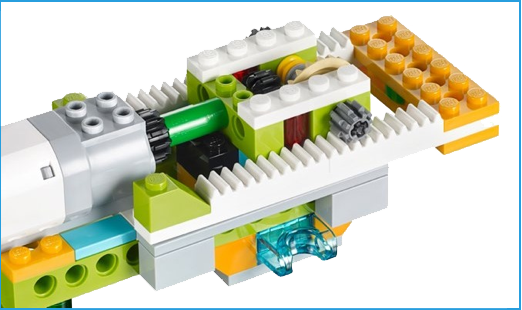
Un tornillo sin fin es una ranura en espiral continua, parecida a la de un tornillo, que se conecta a un
engranaje.
El tornillo sin fin está diseñado para hacer girar un engranaje normal, pero el engranaje no puede hacer
girar el tornillo sin fin, por lo que funciona a modo de freno.
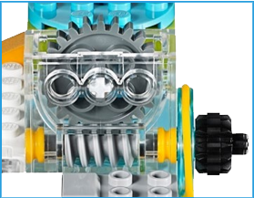
Un travesaño conectado a una pieza giratoria se convierte en un pistón.
Un pistón es una pieza móvil de una máquina que transfiere la energía creada por el motor en un movimiento
ascendente y descendente o de avance y retroceso.
El pistón puede empujar, tirar o impulsar otros elementos mecánicos de la misma máquina.
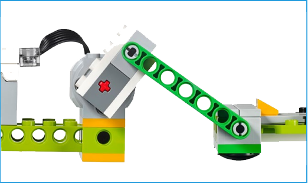
La rueda es un elemento circular que gira sobre un eje para generar un movimiento de propulsión.
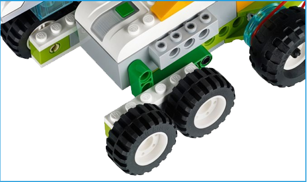
La polea es una rueda con una ranura sobre la que descansa una correa.
La correa es como una pequeña cinta de caucho que se conecta a la pieza del modelo que gira para transferir
la rotación a otra pieza del modelo.
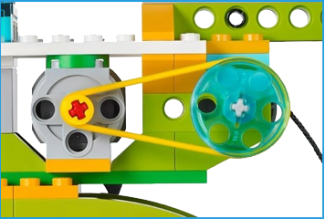
Polea de subida:
Una polea grande acciona una polea pequeña para generar un número mayor de giros.
Polea de bajada:
Una polea pequeña acciona una polea grande para generar un número menor de giros.
Polea girada:
Se usa para crear ejes paralelos, pero que giran en direcciones opuestas.
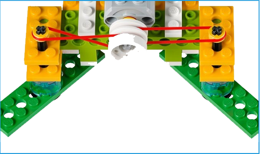
Volver al índice